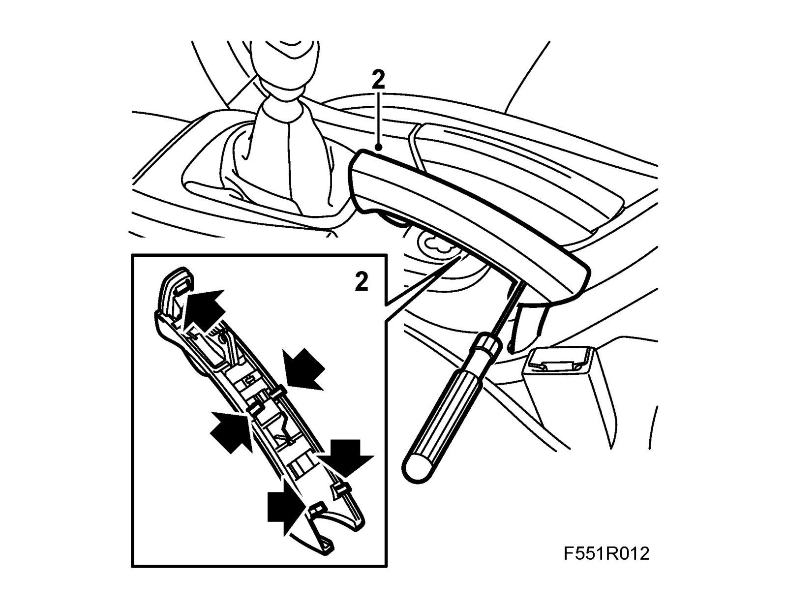
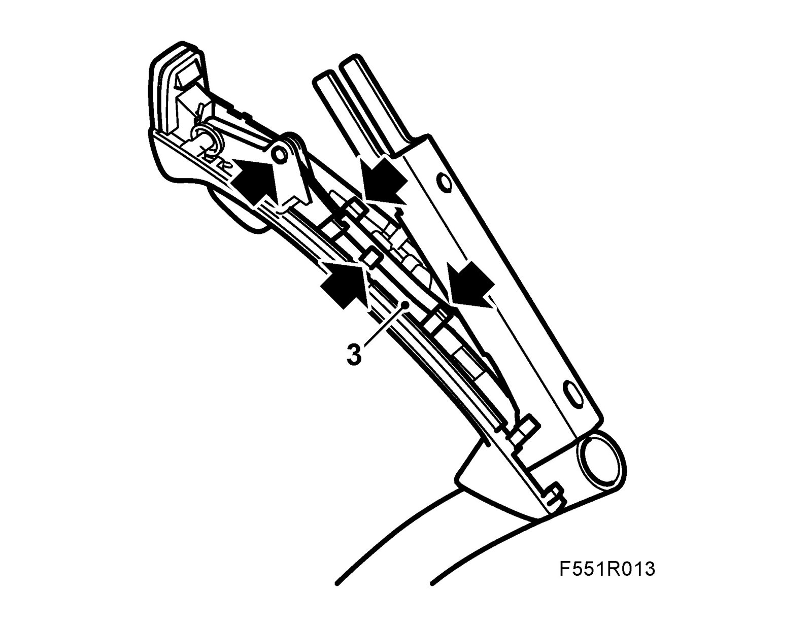
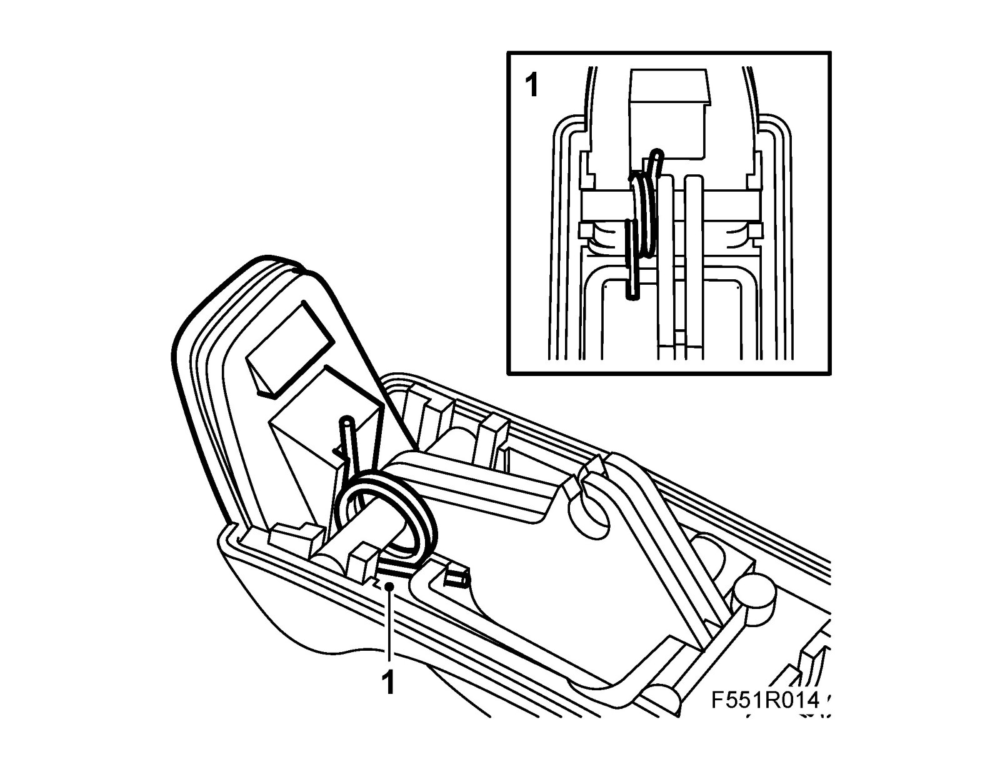
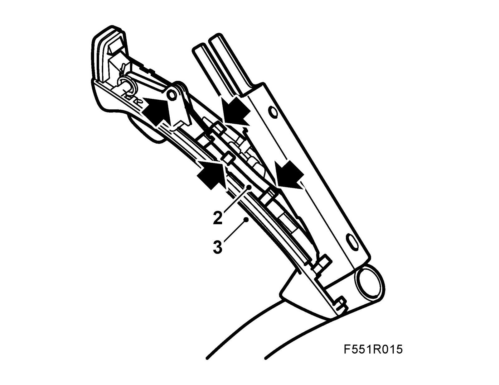
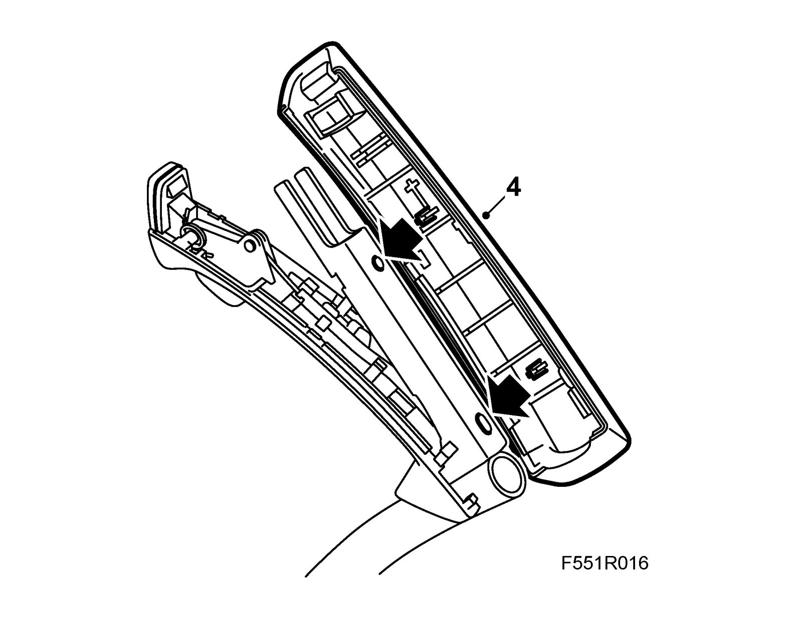

Handbrake Handle
Handbrake handleTo remove
This method involves destructive removal.
1. Apply the Handbrake.
2. Remove the handle. Using a small screwdriver, pry apart the joint with clips.

3. Remove the cable from the lower part of the handle.

To fit
1. Fit the spring and pawl button to the lower part of the handle.

2. Fit the cable to the lower part of the handle.

3. Position the lower part.
Note
Make sure that the cable remains in place in the retainers.
4. Fit the upper part of the handle.
